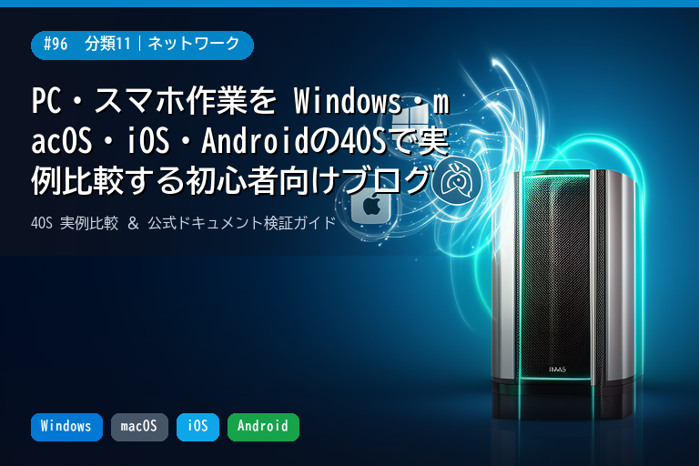

#96｜分類11: ネットワーク・サーバー・インフラ構築 2026-11-28

第96回｜自宅 PC で簡単に構築できる「SSH サーバー」からのリモート操作｜Windows・macOS・iOS・Android の実例比較
「外出先から自宅のPCにあるファイルを確認したい」「スマホから自宅のサーバーを操作して自動化プログラムを動かしたい」といったニーズは、技術的な関心が高い方ほど共通する悩みです。
しかし、いざ設定しようとすると「WindowsとMacでは設定項目が違う」「iPhoneからはどうやって接続すればいいのか？」と戸惑ってしまうことも少なくありません。この記事では、自宅のPCやNASをサーバーとして活用し、4つの主要OS（Windows, macOS, iOS, Android）からどのようにリモート操作を行うのか、標準機能と推奨アプリを交えて徹底比較します。
4OS比較早見表
| 機能 | Windows 11 | macOS | iOS (iPhone/iPad) | Android |
|---|---|---|---|---|
| SSHサーバー構築 | 標準機能（OpenSSH）あり | 標準機能（共有設定）あり | 非対応（アプリが必要） | 非対応（アプリが必要） |
| ファイル共有(SMB) | 標準機能あり | 標準機能あり | 「ファイル」アプリで対応 | アプリ導入を推奨 |
| リモートデスクトップ | RDP（標準） | VNC / Screen Sharing | サードパーティ製アプリ | Microsoft Remote Desktop等 |
| 主な用途 | 業務・高度な操作 | クリエイティブ・管理 | 外出先でのファイル確認 | 自由度の高いターミナル操作 |
1. Windows 11 での実例手順
Windows 11は、標準機能で強力なリモートデスクトップ（RDP）とSSHサーバー機能を備えています。
① 公式仕様に基づく実例手順
- SSH サーバーとしての動作:
- 「設定」>「アプリ」>「オプションのアプリ」からOpenSSH Serverをインストールします。
- 「サービス」アプリを開き、「OpenSSH SSH Server」を探して、スタートアップの種類を「自動」に変更し、サービスを開始します。
- RDP（遠隔デスクトップ）接続:
- 「設定」>「システム」>「リモートデスクトップ」で「リモートデスクトップを有効にする」をオンにします。
- クライアント側から
mstscコマンドを実行し、ホストのIPアドレスを入力して接続します。
- ファイル共有（SMB）:
- 共有したいフォルダを右クリックし「プロパティ」>「共有」から権限を設定します。
- クライアント側のエクスプローラーで
\\ホストIP\共有フォルダと入力してアクセスします。
② 標準機能の制限事項・非対応項目
- iOS/macOS から SSH ターミナル接続: WindowsのSSHサーバーに対し、MacやiPhoneの標準UIから直接「ターミナル」としてコマンドを打ち込む公式な統合メニューはありません（SMBファイル共有は可能です）。
- 解決策: Mac/iPhoneでは Termius などのサードパーティ製クライアントを使用してください。
- Android から RDP: Android標準の「設定」アプリにはWindows RDP接続ボタンはありません。
- 解決策: Google Playストアから Microsoft Remote Desktop アプリをインストールする必要があります。
③ よくあるトラブルと解決法
- 接続エラー: 「この PC は遠隔デスクトップの受け入れに設定されていません」
- 原因：Windowsの設定がオフ、またはユーザーアカウントに権限がない。
- 対策：[システム] > [リモートデスクトップ] で「有効にする」を選択し、管理者権限を確認してください。
- ファイル共有エラー: 「ネットワークパスが見つかりません」
- 原因：SMBプロトコルバージョンの不一致。
- 対策：Windowsホスト側でSMB 1.0を無効にし、最新のSMB 3系で動作するか確認してください。
- SSH ログイン失敗: 「接続を拒否されました」
- 原因：OpenSSHサーバーの起動忘れ、またはパスワード認証が無効（キー認証のみ）。
- 対策：
ssh-keygenで鍵を作成し.ssh/authorized_keysに登録するか、設定でPasswordAuthentication yesを確認してください。
2. macOS での実例手順
macOSは「共有」設定をオンにするだけで、非常にスムーズにサーバー化が可能です。
① 公式仕様に基づく実例手順
- SSH サーバーとしての動作:
- 「システム設定」>「一般」>「共有」を開き、「SSH」のスイッチをオンにします（デフォルトポート22）。
- ファイル共有（SMB）:
- 同じく「共有」メニューで「ファイル共有」をオンにします。
- 「オプション...」をクリックし、SMBファイル共有とAFPを有効化します。
- VNC（画面共有）:
- 「共有」メニューで「画面共有」をオンにし、パスワード保護を設定します。
② 標準機能の制限事項・非対応項目
- Windows から macOS SSH への直接接続: Windows標準のRDPはmacOSには適用できません。
- 解決策: VNCクライアントまたはSSHクライアント（PuTTY等）を使用してください。
- Windows 10/11 から VNC 接続: Windows標準機能には、macOS用VNCクライアントが含まれていません。
③ よくあるトラブルと解決法
- 「ファイル共有」が有効なのにアクセスできない
- 原因：Windows側のSMBプロトコル不一致、またはゲストアクセスの制限。
- 対策：Macの「オプション...」で「SMBファイル共有を許可する（パスワード保護あり）」を選択し、ユーザー名/パスワードを指定してください。
- SSH ログイン時のエラー: 「Authentication failed」
- 原因：macOSのデフォルト設定がキー認証のみになっている。
- 対策：
ssh-keygenで鍵を作成し~/.ssh/authorized_keysに追加するか、設定を再確認してください。
- VNC 接続時の画面表示がおかしい・黒い
- 原因：解像度不一致やクライアント側のコーデック未対応。
- 対策：Macの「ディスプレイ」設定でVNC互換性の高い解像度に固定するか、最新のVNCクライアントを使用してください。
3. iOS（iPhone / iPad）での実例手順
iOSはモバイルデバイスとしての制約があるため、標準アプリを賢く使い分けるのがコツです。
① 公式仕様に基づく実例手順
- ファイル共有（SMB/CIFS）:
- 「ファイル」アプリを開き、サイドバーの「…」から「場所を追加」を選択。
- サーバータイプで「Windows PC」や「Mac」等を選び、IPアドレスとフォルダ名を入力します。
- SSH ターミナル操作:
- iOS標準機能にはSSHコマンドラインを直接入力するUIはありません。
- 解決策: App Storeから Termius や Fork といったサードパーティ製アプリをインストールして接続してください（公式仕様外の代替手段です）。
② 標準機能の制限事項・非対応項目
- VNC/Virtual Network Computing: iOS標準アプリでmacOSやWindowsの画面を直接制御する公式機能はありません。
③ よくあるトラブルと解決法
- 「ファイル」アプリでの接続エラー: 「ネットワークにアクセスできません」
- 原因：同一Wi-Fiにいない、またはルーターのファイアウォールでポート445等がブロックされている。
- 対策：iPhoneとホストが同じネットワークにあるか確認し、必要に応じてルーターのポート開放を行ってください。
- 共有フォルダが見えない
- 原因：ホスト側で「ゲストアクセス」が無効化されている。
- 対策：ホストPC側で適切なユーザーアカウントを作成し、パスワードを設定した上で権限を付与してください。
- アプリのインストール制限（企業管理デバイスなど）
- 原因：MDMによりサードパーティ製SSHクライアントがブロックされている。
- 対策：IT管理者に許可を申請するか、WebベースのSSHクライアント等の代替案を検討してください。
4. Android での実例手順
Androidは自由度が高いため、アプリを組み合わせることで非常に強力なリモート操作環境を構築できます。
① 公式仕様に基づく実例手順
- ファイル共有:
- Files by Google や各メーカー純正の「ファイル」アプリを使用します。
- ただし、標準メニューに直接的なSMB接続ボタンがない機種が多いため、Playストアから Solid Explorer などのファイルマネージャーを導入するのが一般的です。
- SSH ターミナル:
- Playストアから Termux や Juice SSH をダウンロードします。
- これにより、Android端末上で高度なシェル操作が可能になります。
② 標準機能の制限事項・非対応項目
- 標準システムメニューでのSMB接続: 機種によって「設定」内にSMBクライアントボタンが存在しないことが多いため、基本的にはアプリ導入を前提とします。
よくあるトラブルと解決チェックリスト
- [ ] 「接続拒否（Connection Refused）」が出る
- 原因：サーバー側のサービス（OpenSSHやリモートデスクトップ）が起動していない。
- 対策：サービスのステータスを確認し、自動起動に設定されているかチェック。
- [ ] 「タイムアウト」で接続できない
- 原因：ルーターのポートフォワーディング設定ミス、またはファイアウォールによる遮断。
- 対策：ルーターの設定画面で正しいIPアドレスに対してポート（22, 3389等）が開放されているか確認。
- [ ] 「認証失敗」で進めない
- 原因：パスワードの打ち間違い、または鍵認証のみのモードになっている。
- 対策：パスワードを再入力するか、設定ファイルでPasswordAuthenticationを許可する。
まとめ：快適なマルチOS環境を作るポイント
自宅PCやNASをサーバーとして活用し、4つのOSからシームレスにアクセスできる環境を整えることは、生産性を飛躍的に向上させます。しかし、安定したリモート操作を実現するためには、ソフトウェアの設定だけでなく「インフラの基礎」も重要です。
例えば、Wi-Fi 6/6E/7対応ルーターを導入することで、多数のデバイスが接続されても低遅延・高速な通信を維持できます。また、家庭用NASを導入すれば、PCを常に起動させておく必要がなくなり、より安定したファイル共有が可能になります。さらに、安定した有線接続のために高品質なLANケーブルや、ポートを拡張するスイッチングハブを適切に配置することで、ネットワークのボトルネックを解消できます。
まずは標準機能でできることを試し、足りない部分は信頼性の高いサードパーティ製ツールで補う。この「ハイブリッドなアプローチ」こそが、快適なマルチOS環境を作るための近道です。
参考文献・公式ドキュメント（一次情報ソース）
本記事の手順・仕様は以下の各OSおよびツールの公式ドキュメントに基づいています。OSアップデートによりメニュー名称や挙動が変わる場合があるため、最新仕様の確認にもご活用ください。